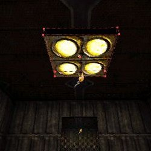
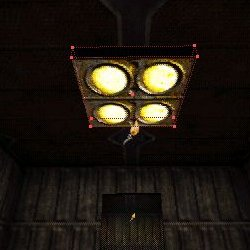

In the image above Certain parts of the browser window are numbered. Here is the key:
1) Selects Browser Mode (Textures, Classes, Sounds, etc....)
2) Selects already loaded texture packs. the arrows
3) Selects the groups within the texture pack.
To start with I am assuming you have a basic knowledge of UnrealEd and have read my BASIC tutorial or something similar. This tutorial is designed to get you started with basic light and texture procedures and will not go into great detail on either. The tutorial will give you enough information so that you can start doing cool things with light and textures, but it is not THE ONE document on the subject. If you are a seasoned veteran in UnrealEd then this tutorial will not help you much. If you are just starting or there are things you aren't sure about with lights and textures then read on!
First of all, to get the most out of Unreal, make sure you have the latest patch available at Unreal.com.
Second, if you have any problems starting the editor then get the latest UnrealEd fix here.
Third, To get the best performance out of the editor, limit what you have running in the background. Remove everything unnecessary including the screensaver to get maximum performance from Unreal and the editor. UnrealEd is a memory hog.
Tip: If you have been running a lot of games or other CPU resource sensitive applications, then reboot your system. This will help clear virtual memory and RAM and will allow maximum performance from UnrealEd. The more memory you have free, the less chance of a "random crash."
Last, If you have been a Quake/Quake2 editor and are trying out UnrealEd then it might be helpful to read this article: Making the Change.
Good lighting and proper texture can make or break a level. I have played lots of levels that I thought, "With the right lighting and better texture alignment, this level would ROCK!" All too often amateur level designers neglect proper lighting and texturing and effectively "ruin" their levels.
Like most things in Unreal, the textures are stored in package files with the extension .UTX. Theses packages will be loaded with the maps but are not stored in the maps. When you load a map in the the editor it will only load the textures from the pack that are used in that level. To get the whole texture pack loaded you must click the LOAD button on the bottom of the Browser window and select the appropriate .utx file. This is the Texture Browser and the the texture with the green box around it is the highlighted one. This is the texture that will be put on any brush you add.

In most of the texture packs that ship with Unreal the textures are grouped by the texture application. That is, Lights, Walls, Floors, Ceiling, etc... are grouped together.

In the image above Certain parts of the browser window are numbered. Here is the key:
1) Selects Browser Mode (Textures, Classes, Sounds, etc....)
2) Selects already loaded texture packs. the arrows  will scroll through the texture packs.
will scroll through the texture packs.
3) Selects the groups within the texture pack.

To begin with open the editor (duh!) and choose a texture pack. Choose something that has light textures in it. I am using DecayedS so you might want to load that pack to follow along. Now pick a base texture and build a room with the cube brush, make it 256 high by 512 by 512. To change a texture on a brush face simple click it in the 3D view to highlight it.

Once a texture is highlighted, choose another texture in the browser and click it. This will change the highlighted texture to the one you just picked. Try it a couple times. Good. OK, now we want to change all the walls to a different texture. To make multiple selections hold CTL while clicking it. Also, when making multiple selections, if you hold CTL and and click a texture that is already selected it will "un-select" that texture.
Hold CTL and select all the walls then go to the browser and pick a nice wall texture to change it to. Click this texture in the browser and all the walls should be re-texture now.
After making multiple selections and re-texturing it's a good idea to click the "Select None"  button to make sure you don't accidentally retexture something again. I usually click this button out of habit before selecting a new texture, just to make sure.
button to make sure you don't accidentally retexture something again. I usually click this button out of habit before selecting a new texture, just to make sure.
Okay, now that you know how to change a texture, go ahead and change the floor and ceiling.
Now that the room is textured, we need more area to work with. Copy* the room and move the brush just to the "north" (one grid square) of the first room in the overhead view. Now subtract the brush and you should have two identical rooms.
We are going to make a window between the two rooms. We are going to make this window 128 high and 128 breadth. We know that the two rooms are 16unitss apart because we placed the new room 1 grid square from the first one (one grid square = 16 units). So we need to make this window 16 units wide to fit between the two rooms.
So right-click the cube icon and go to Cube Properties. Make the cube 128h x 16w x 128b and then position it between the two walls.

To get the brush to line up correctly you can do two things:
a) you can right-click and empty spot on the grid and then resize the grid to 8 units.
b) you can highlight the red brush by clicking it, and then right-click one of the "corner" vertices and the brush will "snap to the grid" using that vertex. UnrealEd snaps by the "pivot" vertex (center vertex by default). The "pivot"vertexx will have a little cross on it.
In casee you didn't read the BASIC tutorial (you should have!) then here is how to copy the room: Move the red brush just off the room in the overhead view. Now click one side of the first room brush. This should highlight the brush. Right-click and go to Copy Polygons To Brush. This will make the red brush an exact copy of that brush. Now click anywhere in the window or click the Select None button. Move the red brush to it's new location and click subtract. You have just made a copy of the first room!
We aren't finished yet. Yes, we have a hole, but we want an actual Window there. First step is to find the Window Texture we want. There are some good ones in the Genln.utx pack so go to the browser and load that pack, then go to the Glass group. Click the Select None button (just to be sure) and then select a nice glass texture and highlight it.
Now right-click the sheet Icon. We know the size is 128 x 128 (the default) so we shouldn't have to change that, but we do need to change the sheets orientation. Right now it's set on the Floor/Ceiling, so we need to click the Y button. That should make it right. Now position the sheet just in the center of the "hole." Now to place it correctly you will have to resize the grid, so if you used the "pivot point" method to place the hole then resize the grid now to 8 units. Now place the sheet right in the center of the hole.

Once you have the sheet positioned then click the ADD SPECIAL Icon. Go to the Predefined drop-down menu and select Transparent Window and under Visibility click the 2-Sided button. Now click the Add Special button and you should have a window.
Tip: Most brushes in Unreal will be 1-sided. We made the window 2-sided because we want to be able to see it from both sides (from both rooms).
If we were to play this level now (aside from the fact that it would be totally dark since we don't have any lights) you would notice that you can shoot and actually move through the window. This is normal. The sheet brush we used to add the window will NEVER block objects. EVER. Sheets do not, and cannot block anything. Don't bother messing with the Collision Properties of the sheet, it won't help.
However, we do want this window to block objects, so lets figure out how to do that.
UnrealEd is cool. The programmer knew that since sheets won't block anything there needs to be a way to stop objects from moving through sheets. We are going to use an INVISIBLE COLLISION HULL. Basically a collision hull is an invisible cube brush used to block actors but cannot be seen in the game.
We need to place our collision hull just in front of the window, but not touching it. I usually make my collision hulls one unit thick. Since the collision hull cannot touch anything else, and we want it as close to the window as possible, let's size our cube brush so it is just smaller than the window and 1 unit thick (That would make it: 127 x 1 x 127). So size the cube brush like that and then place it just in front of the window and then click the AddSpeciall Button. From the Predefined menu choose (oddly enough) Invisible Collision Hull. Add one on both sides of the window. After you place them both, if you zoom in a bunch it should look like this in the overhead view:

Note: if you look in the 3D view you will see the invisible collision hulls. Click thereal-timee Updating button (looks like a joystick) in the 3D window and it will disappear.
Okay, we have done a little work so it is time to save it. First press F8 and click Rebuild Geometry. Use all the default settings. You should notice that everything went black in the 3D view. This isbecausee we have no lights! Choose the "Textures" mode to get a "full bright" view in the 3D window. We will add lights soon. After rebuilding then save the map (call it anything you like).
NOTE: There are other methods of adding windows and getting collision without using sheets and collision hulls. These methods use very narrow cubes with a transparent window texture on the visible faces. This tutorial will not cover these methods, as they are more advanced.
You will probably want to change the texture on the "hole" the window sits in. The easiest way to do this is to select one face of the hole, SHIFT-B to select the whole brush and then choose a new texture. Pick a trim texture or something that looks like a window frame. You will probably have to play with the alignment to get it to look right.
There is a lot to learn about texture properties. There is a section in my basic tutorial about texture properties and alignment and if you haven't read that yet go do so! The following tips and tricks expand on that and will give you a good idea what the different properties do. This is the Surface Properties window for a texture. I will NOT outline each item, only the most commonly used types.

MASKED - This will "mask out" or hide the color 0,0,0 (usually black by default) in the color palette of a texture. This is used on grates, fences, screens, and stuff so you can se through part of it. There are several textures in DecayedS (under Mask) that you can add to a sheet somewhere in the level to look at it. They are Masked by default. Delete the sheet when you are through looking at it.
INVISIBLE - This will make any surface invisible in the game. Used on Zone Portals andCollisionn Hulls.
2-SIDED - Makes the face of the brush viewable from both sides. Should only be used on sheets (for now) because you will never see the "inside" of a solid brush.
PORTAL - Makes the surface a portal for zoning. Used on water/lava/slime, etc...and the invisible zone portals used to "zone off" your level.
MIRROR - Should be self-explanatory. Makes a reflective, mirror surface. Used with Translucent you will get a polished, reflective effect.
SPECIAL LIT - This surface will only be lit by lights that are set up as Special Lit lights.
UNLIT - This surface will not reflect light and will always be lit 100%, regardless of lights.
HI/LO SHADOW DETAIL - Increases or decreases the amount of shadow detail on the surface. Checking both of these boxes sets a special "Medium detail" flag.
BRIGHT CORNERS - This will "amplify" the light refracted by the surface. Useful for lighting those "hard to light" areas and forincreasingg the brightness of the surface for lights and other textures.
TRANSLUCENT - This makes the surface "see through." It partially "masks out" the darker colors in a texture. The "more black" the area, the more translucent it becomes. Used on water, glass, etc...to get a surface that you can partially see through.
MODULATED - This works like translucent only in reverse. The lighter the texture color the more it is masked out. Look at the texture pack Detail.UTX and add a sheet and set it to modulated and rebuild to see the effect.
Big/Small WAVY - This will cause the texture to kind of sway. You would use this on water or for other moving effects.
FAKE BACKDROP - This tells theenginee to not draw this texture, but to "display" the skybox here.
U/V-PAN - Will cause the surface to "move" in the U or V direction. Used for simulating movement on water,conveyorr belts, etc....
I could write a book on texture alignment, but basically all you have to know is that "if it looks right it is right." If you add a texture that doesn't line up on your brush, people notice. Reviewers take points off, and professionals laugh. Line up your textures!
The easy way to align them is by highlighting the texture and right-clicking and selecting one of thealignmentt settings. Floor/Ceiling is for horizontal surfaces and will help you tile your floors/ceilings correctly. Aligning as Wall aligns vertical surfaces, and Wall Panning will help you align multiple wall surfaces so the tile correctly as well. You can also access these alignment settings in the Surface Properties Window by clicking the Align tab. Again, the best way to learn this is to try it your self and see what you get.
Panning (accessed through the Surface Properties Window, Pan tab)will move the texture left, right up or down so you can align them "manually." You can pan textures by clicking the Pan Textures on the ToolBar  . Hold CTRL and left or right mouse to move the texture in different directions.
. Hold CTRL and left or right mouse to move the texture in different directions.
You can rotate the textures in the Surface Properties Window, Rotate tab. The buttons there are pretty self explanatory as to which way they rotate the textures. You can also rotate textures "manually" with the Rotate Texture button  and holding CTRL and left or right mouse button.
and holding CTRL and left or right mouse button.
Often times you will need to scale your textures, either up for large surfaces or down for smaller ones. Click the Scale tab in the Surface Properties Window. Simple scaling will scale the texture uniformly in all directions. Using the Custom Scaling settings you can scale itdifferentt amounts on the U or V axis. Use this wisely, as you can really distort a texture with it.
Tip: Scaling a texture too large can also make the texture look really pixelated and "fake".
Okay, you should have a good idea what you are doing with Textures now, so we will have to add some lights to the level. If you added any sheets or anything to play with the texture properties remove them now. Rebuild and let's light this baby up!
The easiest way to add a light to the level is to right-click the 3D view where you want the light and from the menu choose Add Light. Easy enough? You can also hold the L key and right-click the map to place a light where the cursor is.
Okay, we had the two rooms and the window, so lets light it up some. First add a light in the center of the ceiling of one of the rooms. Rebuild and switch the 3D view toDynamicc Lighting. Now add a light in the second room. Rebuild and save.
With the lights right up against the ceiling it doesn't really light the room very well. Select both lights and lower them about 64 units. Rebuild again and look at the difference. If you want to see a "side-by-side" comparison, only lower the light in one room.
Now we have to add a light source. One thing that bugs me (and most map reviewers) is when you have a lightemanatingg from nowhere. That is, a nice light area with no light source to emit it.
For this tutorial I don't want anything fancy so I will add a plain square light on theceilingg. You can and should get more creative with your lights. First go to the Light group in the texture set and find one that is appropriate for a ceiling light. I used Light6 at the bottom. Now size the cube brush to 16 x 128 x 128 (or whatever is appropriate for the texture you selected) and place it on the ceiling like below.


TIP: to reduce the BSP cuts and thereby reducing your poly count add the light fixture as a SEMI-SOLID brush. It won't matter much for the simple level in this tutorial, but it will help a lot in larger, complex rooms with lots of polys.
We are going to have to lighten up this light some to make it look right. If you don't believe me then rebuild now and look at it. It doesn't really "glow" enough to be giving off the light does it. We are going to try two things. Okay,highlighth the light surface of the texture and right-click and open the Surface Properties window. Check the Bright Corners box. Close the window, rebuild and now look at the light. Now go change the surfacepropertyy to Unlit and rebuild and then look at it. The images below illustrate these effects:

 
Now, by using Copy Polygons to Brush you can make an exact duplicate of your light fixture by copying the size and textures to the red brush, move it to the other room, and adding another one. Do this now and then rebuild and you will have a light fixture in both rooms.
Before we move on to all the light properties, you should play around with the surface properties a bit. Change one of the floors to Mirror and Translucent, rebuild and look at it. Then Make the other one Special Lit and rebuild. See how it's dark. That'sbecausee a special lit texture will only reflect a light set to special lit, and we have none in our test level. Change the light in that room to Special Lit and then rebuild. Notice how everything else went dark? Okay, reset the light and the textures. Play some more, set a floor to Hi or Lo shadow detail and look at that. Try making setting it to Bright Corners. Play with all the settings we outlined above to see what they doexactlyy. You should get an idea of what each property does and an idea of when and where to apply them.
TIP: DO NOT make atextureetranslucentt unless there is something behind it to show through. If you made a floor for instance translucent and there was nothing below it but the void, well try it and see what you get!

LightBrightness is just that, how bright the light is from 0 to 255.
LightHue is the color of the light. This can be fun to figure out at first. If you have trouble finding the right light color values try Ulight, a wonderful utilityavailablee at my web site (http://unreal.gamedesign.net). It uses Windows color picker and allows you to select the color and then gives you the Unreal color values forBrightnesss, Hue and Saturation. A basic color chart would show:
LightSaturation is the amount of light that is reflected off a surface by color. The higher the saturation, the more colors it will reflect. 255reflectss all colors, effectively making the light white. Remember, the amount of saturation can affect the color of the light.
LightRadius is how far the light shines from it's source. Setting this correctly for the area is crucial to getting the right light effect in your level. Play with this setting a lot to get an idea of exactly how far the radius extends. it can also be helpful to select the Radii view in the 2D windows and select your light. A Redcirclee will appear around the light, indicating it's radius.

Lights in Unreal have quite a few settings to get dynamic lighting effects. It isbeyonde the scope of this basic tutorial to outline each one. You set these with LightEffect 
and LightType
The best advice here it to try them out and see what they do. Remember to turn "real-time" updating on in your 3D view to see the light effect in the editor.
Tip: Too many dynamic lights in one area can slow your levels down, as they can take quite a bit of your PC's resources to render. Use sparingly.
Although there is a setting for it in the actors properties, Unreal has no true Lensflare effects. It does, however have coronas which can look awesome when used correctly. I will give you the basics on creating the coronas and then you can experiment to see what looks right on your particular light in your particular level.
To start with we need to pick a corona texture. There are some good ones in the GenFX.utx package. Load it now and go to the LensFlar sub group.

Pick one you like and click it to highlight it. Now pick a light in your level, and right-click it. Under the Lighting Properties set bCorona to true.

Expand Display and then click where it says Skin. Click the "use" button and the texture name should appear next to it.

Rebuild your level and should now have a corona on the light.
Note: if you do not see the corona in the editor go to Options on the menu at the top of the editor and then Preferences. This opens the Advanced Options properties window. Expand Rendering and then Software Rendering. Set Volumetric Lighting to true. 
Drawscale (under Display) will set how large the corona is. Most likely the default setting of 1.000 will be too large and look "funny." Scale it down. I use .2 or smaller most often.
The LightRadius will set how far away the corona is visible from. The farther you are from the corona the bigger it will appear. As you get closer it scales down. Setting the Light Radius affects when the corona comes into view.
When using colored lights with coronas I will often use two light actors. I set the light brightness to 1 for the light with the corona and then add another light with the actual settings I want the light to give off, and place it next to or under the corona light. That way I can set the LightRadius of the corona so it will look right, and still get the proper LightRadius for the light that will actual light the area.
This concludes the tutorial. If you have any questions, you can e-mail me through my site. You should have enough information now on the basics of lighting and texturing to get started. Make a test level or two and play with what you have learned. Use of dynamic light and textures can really enhance a level.
Good luck and happy mapping! -Wolf Wolf@gamedesign.net